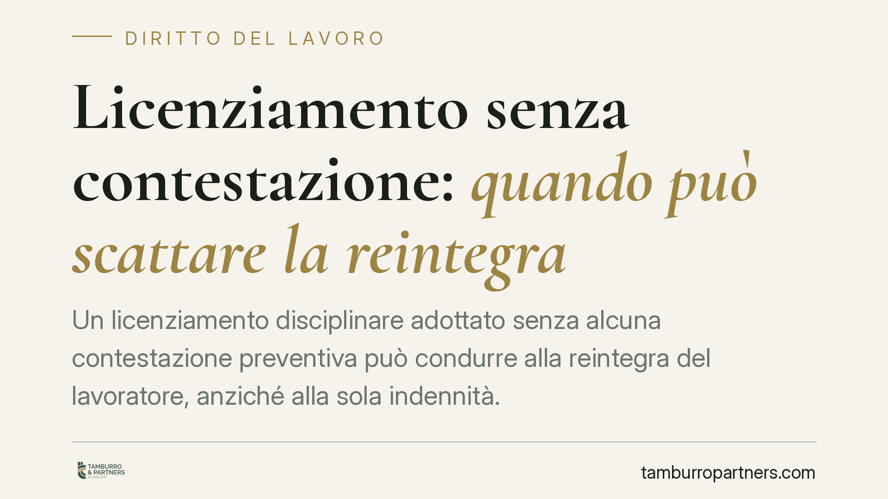

Licenziamento senza contestazione: quando può scattare la reintegra
Un licenziamento disciplinare adottato senza alcuna contestazione preventiva può condurre alla reintegra del lavoratore, anziché alla sola indennità. È un orientamento interpretativo, non pacifico, che tocca il cuore dell'art. 7 dello Statuto dei lavoratori e del regime a tutele crescenti. Analizziamo la questione e i suoi limiti applicativi concreti.

Il caso
Il tema è noto a chi gestisce il personale: un lavoratore viene licenziato per ragioni disciplinari, ma senza che gli sia stata notificata alcuna contestazione preventiva. Nessuna lettera di addebito, nessun termine a difesa. Il licenziamento è nullo o soltanto illegittimo? E con quali conseguenze: reintegra o indennità?
La distinzione non è teorica. Dalla qualificazione del vizio dipende se il lavoratore torna al suo posto o se ottiene un risarcimento economico. In questa sede trattiamo la questione come orientamento interpretativo in discussione, non come principio consolidato: il quadro giurisprudenziale non è univoco e ogni lettura va verificata alla luce della singola pronuncia applicabile.
Inquadramento normativo
Il punto di partenza è l'art. 7 della Legge 300/1970 (Statuto dei lavoratori). La contestazione preventiva dell'addebito non è un adempimento formale accessorio: svolge una funzione sostanziale. Serve a mettere il lavoratore in condizione di difendersi, delimita i fatti su cui si fonda la sanzione e vincola il datore a non andare oltre quanto contestato. Senza contestazione, il lavoratore non sa di cosa deve rispondere.
Per i rapporti sorti dal 7 marzo 2015 si applica il D.Lgs. 23/2015 (tutele crescenti). Qui occorre distinguere due disposizioni:
- L'art. 4 del D.Lgs. 23/2015 prevede, per i vizi formali e procedurali, una tutela esclusivamente indennitaria: il licenziamento resta efficace e il lavoratore ottiene un'indennità.
- L'art. 3, comma 2, riserva invece la reintegra (cosiddetta attenuata) ai casi in cui sia dimostrata l'insussistenza del fatto materiale contestato.
Il nodo interpretativo è proprio questo: la totale assenza di contestazione va ricondotta al vizio procedurale (art. 4, tutela indennitaria) oppure può essere equiparata all'insussistenza del fatto (art. 3, co. 2, reintegra)?
Si tratta di un passaggio interpretativo forte e non pacifico. Un orientamento valorizza la natura procedurale del difetto di contestazione, con conseguente tutela economica. Un diverso orientamento ritiene che, in mancanza assoluta di addebito, non esista un fatto giuridicamente apprezzabile posto a base del recesso, con esiti più vicini alla reintegra. Chi affronta un contenzioso deve verificare quale lettura regga nel caso concreto e alla luce delle pronunce effettivamente richiamabili.
Implicazioni pratiche
Per il datore di lavoro la posta in gioco è rilevante. Se prevale la qualificazione come insussistenza del fatto, il rischio non è l'indennità ma la reintegra, con ricostituzione del rapporto e pagamento delle retribuzioni maturate nei limiti di legge. Una procedura trascurata può quindi trasformare un contenzioso "a costo determinabile" in un contenzioso dall'esito molto più oneroso.
Attenzione, però, al regime delle piccole imprese. L'art. 9 del D.Lgs. 23/2015 esclude di norma la reintegra per i datori sotto soglia e dimezza l'indennità entro un tetto ridotto. Un'eventuale apertura alla reintegra anche per le piccole imprese sarebbe perciò eccezionale rispetto all'impianto ordinario: andrebbe ancorata al testo espresso della pronuncia che la affermasse, e non presunta in via generale. In assenza di un riferimento verificato, resta fermo il regime indennitario attenuato previsto dall'art. 9.
Per il lavoratore, la lezione è speculare: la difesa va costruita sulla qualificazione del vizio, perché da essa dipende la tutela ottenibile.
Cosa fare in concreto
- Verifica sempre che la contestazione disciplinare sia preventiva, specifica e tempestiva: senza addebito non può esserci sanzione legittima.
- Distingui l'assenza totale di contestazione dalla contestazione generica, tardiva o incompleta: sono vizi diversi, con conseguenze diverse.
- Prima di impostare una difesa o un'azione, qualifica il vizio alla luce degli artt. 3, co. 2, e 4 del D.Lgs. 23/2015.
- Controlla il regime dimensionale dell'impresa: l'art. 9 incide in modo decisivo sui rimedi disponibili.
- Non affidarti a massime isolate: verifica gli estremi di ogni pronuncia richiamata prima di fondarvi una strategia.
La contestazione preventiva è il punto in cui si gioca gran parte dell'esito di un licenziamento disciplinare. Trascurarlo non riduce i costi, li moltiplica.
---
Contributo informativo a cura di Tamburro & Partners Avvocati - Avv. Giuseppe Tamburro. Non costituisce parere legale.
Ogni storia di lavoro ha i suoi tempi.
Se gestisci HR e vuoi un confronto su contenzioso, ispezioni o licenziamenti, scrivi allo studio. Ti rispondiamo entro un giorno lavorativo.